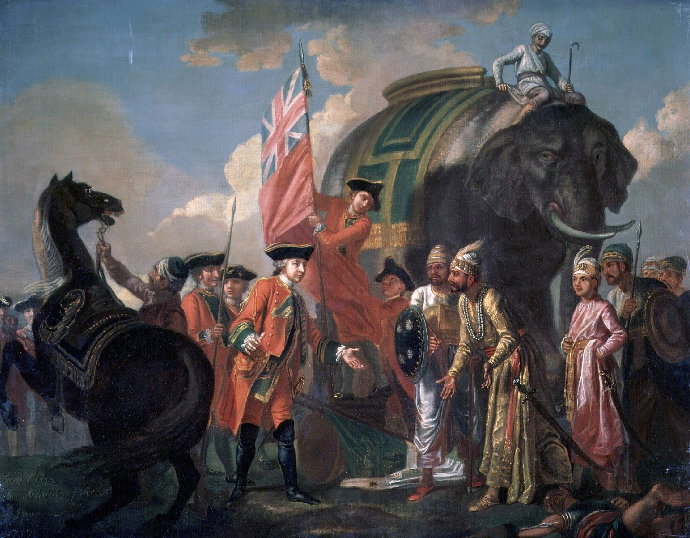
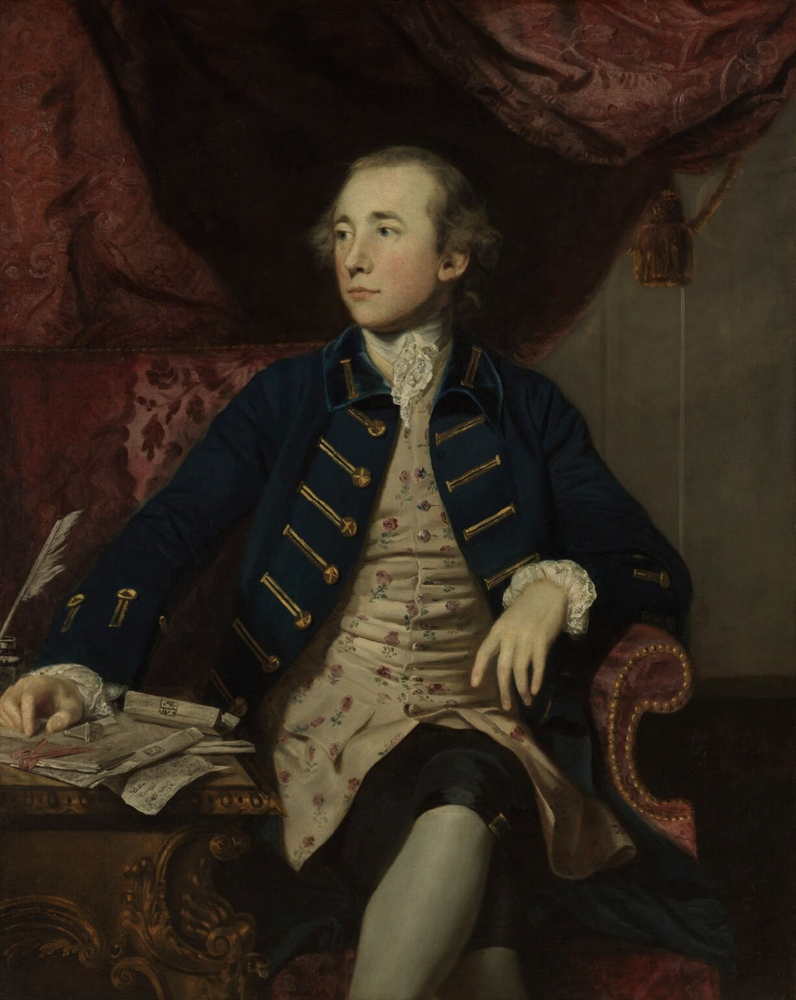
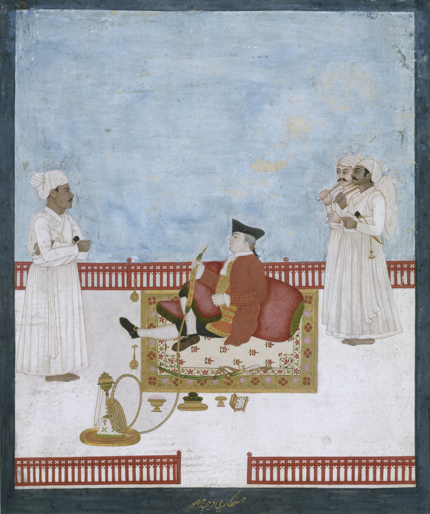
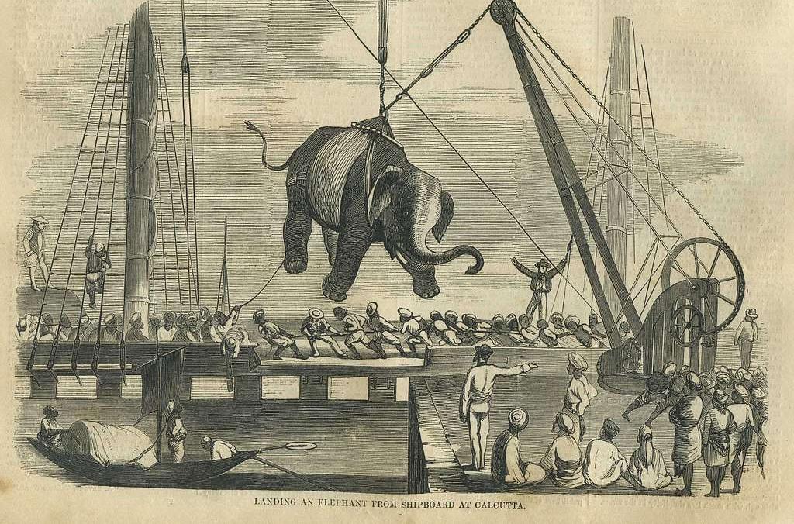
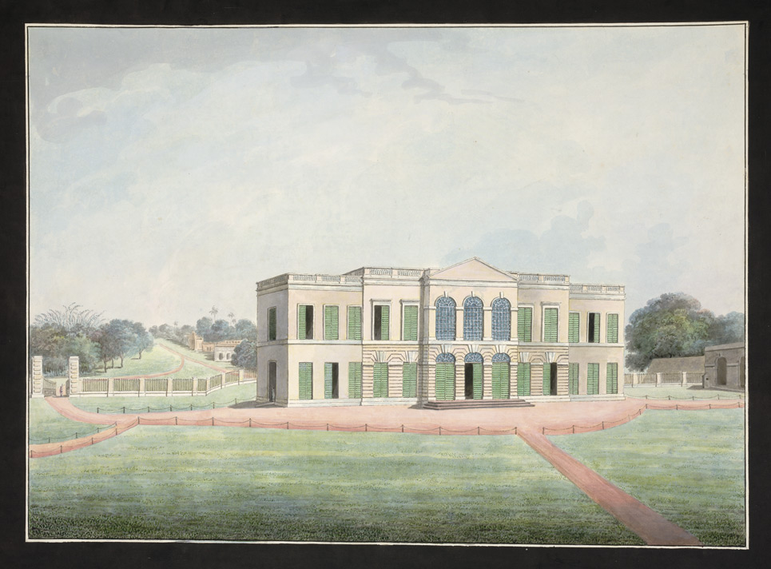

From Traders to Tax Collectors

Lord Clive meeting with Mir Jafar after the Battle of Plassey, the encounter that installed a compliant nawab and gave the Company its first real political leverage over Bengal.
For most of its first century and a half in Bengal, the East India Company was, as its name suggests, a trading company. It bought and sold textiles, saltpeter, and other goods, maintained fortified trading posts, and largely stayed out of the business of governing. That changed with startling speed in the 1760s. The Battle of Plassey in 1757 gave the Company effective political leverage over Bengal's throne for the first time, installing a compliant nawab in exchange for trading concessions. The Battle of Buxar in 1764 went further, delivering a decisive military victory over a coalition that included the Mughal emperor Shah Alam II himself.
The consequence of that victory arrived the following year, in the form of a treaty rather than a battle. On 12 August 1765, at Allahabad, Shah Alam II granted the East India Company the Diwani, the right to collect revenue, on his behalf, across Bengal, Bihar, and Orissa. In exchange, the Company paid an annual tribute and took on responsibility for certain military and administrative functions. On paper, this looked like a modest administrative arrangement, sometimes called the system of dual government, with the Company handling revenue while a nawab retained nominal authority over justice and policing. In practice, it made the East India Company the real government of a territory with a population in the tens of millions, a transformation that its existing administrative apparatus, built for running warehouses and negotiating trade deals, was nowhere near equipped to handle.
A company that had spent a century and a half learning how to buy cloth and sell it at a profit was, within the space of a single treaty, put in charge of collecting taxes from millions of people it had never administered before.On the 1765 Diwani grant
This is the pivot point this whole chapter turns on. Everything that follows, the move of the capital, the flood of new paperwork, the eventual arrival of a printing press, traces back to this single administrative fact: a commercial organization suddenly needed to run a government, and it needed to do so at a scale that made its old methods of record keeping hopelessly inadequate.
It is worth pausing on how strange this arrangement was even by the standards of eighteenth century colonial administration. The Company answered to its shareholders in London, who wanted dividends, not the burdens of running a distant tax system. It also, from 1773 onward, answered increasingly to the British Parliament, which had its own reasons to worry about a private trading corporation wielding this much unsupervised power over millions of people. The so-called dual government system, with the Company handling revenue while a nawab retained nominal authority over justice, was in large part a way of managing that discomfort, letting the Company claim it was not really governing Bengal even as it collected the taxes that made governing possible. In practice, this arrangement proved unstable and short lived, but it captures how unprepared everyone involved was for the scale of the transformation the Diwani grant had set in motion.
Calcutta Becomes a Capital

Portrait of Warren Hastings by Sir Joshua Reynolds. As the Company's senior official in Bengal, Hastings moved the administration to Calcutta in 1772 and fostered the scholarly, print-friendly culture this chapter describes.
The nawab's traditional capital was Murshidabad, well upriver from the coast. For a company whose power still ultimately rested on its ships and its access to the sea, that was an awkward place to run an expanding administration from. In 1772, Warren Hastings, acting as the Company's senior official in Bengal, moved the main administrative departments and treasury from Murshidabad to Calcutta, the fortified trading settlement the Company had built up around a set of villages on the Hooghly since the 1690s. The move was as much practical as symbolic: Calcutta already had the Company's own fort, its own merchant community, and direct access to the ocean route back to London.
The following year, the Regulating Act of 1773 formalized Calcutta's new status, establishing a Supreme Court there and placing the Governor of Bengal in charge, as Governor-General, of the Company's other Indian territories as well. From 1772 until 1911, Calcutta functioned as the capital of British power in India, and that century and a half of concentrated administrative, legal, and commercial activity is the single biggest reason the city, rather than Dhaka, Murshidabad, or anywhere else in Bengal, became the birthplace of the region's printing and newspaper industry. The next chapter deals with that comparison directly. This chapter is about what all that administrative concentration actually required to function day to day: an enormous, continuous supply of written and, eventually, printed material.
Hastings himself was an unusually literate and scholarly Governor-General, with a personal interest in Indian languages, history, and law that went well beyond what his job strictly required. He patronized translations of Sanskrit legal texts into English, supported early Orientalist scholarship, and generally created an administrative culture in which producing, printing, and circulating written material was treated as a normal and valuable part of governing, not an afterthought. That attitude mattered. A different, less curious administrator might have kept Company paperwork to the bare functional minimum. Hastings' Calcutta, by contrast, became a place where scholars, officials, and printers rubbed shoulders, and where the administrative case for a local press was reinforced by a genuine, if self-interested, colonial enthusiasm for producing and studying Indian texts.
An Empire Runs on Paper

A Company painting depicting an East India Company official. Men like this, and the corps of clerks and munshis beneath them, were the ones actually drowning in the paperwork this section describes.
Collecting revenue from a population the size of Bengal's meant generating and processing an amount of documentation that the existing scribal system, described in the previous chapter, was never built to handle. A tax collecting bureaucracy needs standardized assessment forms, receipts, court records, land registers, shipping manifests, and public notices, produced in volume, on a predictable schedule, and, ideally, in a format that many different clerks across many different offices can read and fill out identically. A one-of-a-kind, hand copied manuscript, however beautifully produced, is close to the opposite of what that kind of institution needs. It is slow, it is expensive per copy, and every copy is subtly different from every other copy, which is a serious liability when the entire point of the document is to be enforceable, standardized, and unambiguous across multiple jurisdictions.
This is the specific, narrow mechanism, more than any general idea of colonial modernity, that created a real institutional appetite for a Bengal based printing press. The Supreme Court needed printed forms and printed notices of its proceedings. The revenue departments needed standardized assessment paperwork that could be produced quickly and identically across dozens of district offices. The expanding merchant community around the Company needed a reliable way to advertise incoming and outgoing ships, auction notices, and commercial announcements, none of which existed as a formal category of publication in Bengal before this period. None of these needs were about literature, religion, or scholarship, the domains where Bengal's manuscript and oral traditions had already reached a high level of sophistication, as the previous chapter showed. They were about volume, standardization, and speed, and those are precisely the properties that make a printing press worth the very significant expense and difficulty of setting one up.
It is worth being precise about what this means for how to read the rest of this history. The printing press did not arrive in Bengal because Bengali culture discovered a superior tool for storytelling or scholarship. It arrived because a colonial administrative and commercial apparatus, growing at a pace its existing paperwork systems could not match, created a specific, practical, unglamorous demand for mass produced, standardized documents. Newspapers, when they appear in the next few chapters, essentially ride in on the back of that administrative and commercial infrastructure, reusing presses, type, and paper supply chains that were originally justified on entirely different grounds.
From Treaty to Printing Press: How One Grant Created the Demand
Click through the chain of consequences, in order, from the 1765 Diwani grant to the specific institutional appetite it created for a printing press.
Click step 1 to follow the chain from Shah Alam II's 1765 grant through to the specific demand it created for a printing press.
There is also a workforce dimension to this that is easy to miss. Running the new tax and court system required a rapidly expanding corps of Company clerks and Indian intermediaries, collectively known by terms like banian and munshi, who read and wrote in English, Persian, and Bengali, often all three. This growing class of literate administrators and go-betweens was itself a new kind of audience, distinct from the scholars of Nabadwip's tols or the listeners at a village kirtan. They needed information delivered quickly, in a standard format, on a predictable schedule, because their jobs depended on it. A press serving this audience did not need to compete with centuries of literary or religious tradition. It only needed to be faster and more reliable than the existing alternative, which, as the first chapter showed, was a scribal system built for entirely different purposes.
The Country Trade and the Hooghly

Landing an elephant from shipboard at Calcutta, from Harper's Weekly, 1858. A later illustration, but a vivid reminder of the sheer variety of cargo that moved through the port the Hooghly trade depended on.
Administrative paperwork was only half of the story. The other half was commerce, and specifically the growth of what contemporaries called the country trade, meaning trade conducted within Asia by private merchants operating alongside, and sometimes in competition with, the East India Company's own official monopoly trade back to Europe. As Calcutta grew into an administrative capital, it also grew into a major node in this private trading network, with British, Armenian, Indian, and other merchants all operating out of the city, moving goods along the Hooghly river and out into the Bay of Bengal and beyond.
This merchant community had its own appetite for print, distinct from the Company's administrative needs but running along exactly the same infrastructure. Merchants wanted a reliable way to publish shipping schedules, cargo advertisements, auction notices, and general commercial news, the same basic function that the earliest English language Calcutta newspapers, covered in the next few chapters, would end up serving before they became vehicles for political journalism. The Hooghly river itself functioned as the physical spine of this whole system: ships loaded and unloaded at Calcutta's docks, warehouses lined the riverbanks, and the flow of goods in and out of the port created exactly the kind of dense, literate, commercially minded audience that a newspaper needs to survive financially through advertising, quite apart from whatever else it might choose to print.
The country trade also brought a genuinely international mix of people through Calcutta's docks and counting houses: British free merchants operating outside the Company's official monopoly, Armenian traders with their own long standing commercial networks across Asia, Parsi merchants connecting Calcutta to Bombay and onward to the Gulf, and Bengali and other Indian merchants and bankers who financed and organized much of the actual movement of goods. Each of these communities had its own reasons to want fast, reliable, written information, about prices, about ship arrivals, about political conditions that might affect a voyage, and each added to the pool of potential newspaper readers and advertisers that would make Calcutta's earliest presses commercially viable in a way a similar venture in a smaller river town simply could not have been.
Crossing the Ocean

Rear view of the East India Company's factory at Cossimbazar, one of the trading posts that fed the same maritime supply chain, months of open ocean, that eventually carried a printing press to Calcutta.
None of this mattered unless the physical technology of printing could actually get to Calcutta, and in the eighteenth century that meant a sea voyage of several months. East Indiamen, the large, heavily built merchant ships that carried the Company's trade between London and its Asian settlements, sailed the London to Calcutta route in anywhere from three to five months each way, with the median voyage time falling from around 160 days in the 1770s to around 120 days by the 1820s as ship design and navigation improved. Everything Calcutta's growing administration and merchant community needed from Britain, instructions, personnel, luxury goods, and eventually printing equipment itself, traveled on this same slow, seasonal, weather-dependent shipping cycle.
James Augustus Hicky's own printing press, the one that produced Bengal's first newspaper in January 1780, is a direct illustration of this supply chain in action. Hicky had spent time in London apprenticing with a printer before his career took him to Calcutta by a more roundabout, difficult path, and when he decided to set up a press of his own, he used money he had managed to save to order type and construct a press, drawing on the skills and connections from those earlier London years. The specific paper trail is thin, but the general pattern is not in doubt: the technology, expertise, and often the raw materials behind Calcutta's earliest presses had to cross the same ocean, on the same kind of ships, as every other piece of the colonial and commercial infrastructure this chapter has described.
The seasonal nature of this shipping cycle also shaped how Calcutta's earliest information economy actually worked, in ways that are easy to forget from a distance of two and a half centuries. Ships mostly departed and arrived in predictable seasonal windows, dictated by monsoon winds, which meant that news, letters, and instructions from London arrived not in a steady trickle but in periodic bursts, whenever a fleet made port. A newspaper reporting European news in Calcutta in this period was, by necessity, always reporting events that were already several months old, filtered through whichever ship happened to carry that particular letter or gazette. This lag is worth holding onto as a baseline. Every later chapter in this history involves technology, first faster ships, then telegraph cables, then radio, then satellite broadcast, that exists specifically to shrink this gap between an event and when Bengal's readers could learn about it.
Trade and Print: A Network Map
Calcutta depended on a network of five places, each feeding it a different kind of input: political authority from London, missionary printing expertise from Serampore, administrative parallels from the Company's other presidency capitals at Madras and Bombay, and a two-century-old proof of concept sitting quietly at Goa. Select any place below to see its role.
Trade & Print Network
Five places, five different reasons Calcutta needed them. Click one to read its role.
Calcutta sat at the center of an ocean spanning network of administration, trade, and, eventually, print technology. Click any chip above.
Empire and Trade, Side by Side
The timeline below places the political and administrative story, the Diwani grant, the move of the capital, the new courts, alongside the slower, steadier rhythm of the trade network that made all of it physically possible. The two tracks move at very different speeds. Political events in this period could happen within days or weeks of each other, a battle followed a year later by a treaty followed a few years later by a capital city on the move. The trade network, by contrast, operated on a rhythm measured in shipping seasons, with the fastest possible response to any instruction from London still taking the better part of a year, out and back. Reading the two tracks side by side makes that mismatch concrete. Filter to isolate either track and see how closely, and how unevenly, they actually run together.
Empire and Trade: A Comparative Timeline
Administrative milestones in Bengal, set against the trade infrastructure that carried people, paperwork, and printing equipment.
What This Explains
It is worth stating this chapter's argument once more, plainly, before moving on. Every factor described here, the Diwani grant, the move of the capital, the boom in country trade, the seasonal rhythm of the London shipping route, was already in motion by the mid-1770s. Put the pieces together and the timing of Bengal's first press stops looking like a coincidence. A trading company became a tax collecting government almost overnight in 1765. That government moved its capital to a port city in 1772, concentrating administrative, legal, and commercial activity in one place for the first time. The paperwork demands of running that government, alongside the ordinary needs of a growing merchant community, created a real, practical appetite for standardized, mass produced documents that no manuscript economy could satisfy. And the same maritime trade network that carried the Company's officials, its instructions, and its goods back and forth to London also carried, eventually, the type, the presses, and the printers themselves.
None of this required a single change in Bengali religious, literary, or scholarly culture. The manuscript and oral traditions described in the first chapter continued largely undisturbed. What changed was that a new institution, foreign in origin and administrative in purpose, arrived with both the resources and the specific, narrow motivation to import a technology that had been sitting unused, a few hundred miles down the coast in Goa, for over two hundred years.
It is also worth noting what this account leaves out, deliberately, because later chapters take it up in full. This chapter has said almost nothing about the newspapers themselves, what they printed, who read them, and how they eventually turned from administrative and commercial tools into vehicles for political argument and, eventually, resistance to the very Company that had made their existence possible. That is not an oversight. It reflects the actual order of events. The infrastructure came first, justified by tax collection and trade, and only afterward did anyone use that infrastructure to do something as culturally significant as launch a newspaper. Understanding that sequence matters, because it means the press's later role as a check on colonial power, however real and important that role became, was never the reason the technology arrived in Bengal in the first place. It was closer to an accident, or at least an unintended consequence, of a bureaucracy trying to solve its own paperwork problem.
The next chapter asks a related but distinct question: given that this pressure was building generally around the Company's expanding administration, why did the actual press end up specifically in Calcutta, rather than in Dhaka or any other city in the Bengal region? The short answer, already visible in this chapter, is that Calcutta was where the capital, the courts, and the country trade all happened to land at the same time. The next chapter works through exactly why that happened, comparing Calcutta directly against Dhaka's administrative status, population, and printing infrastructure across the same period, and what it meant for the century of publishing history that followed.